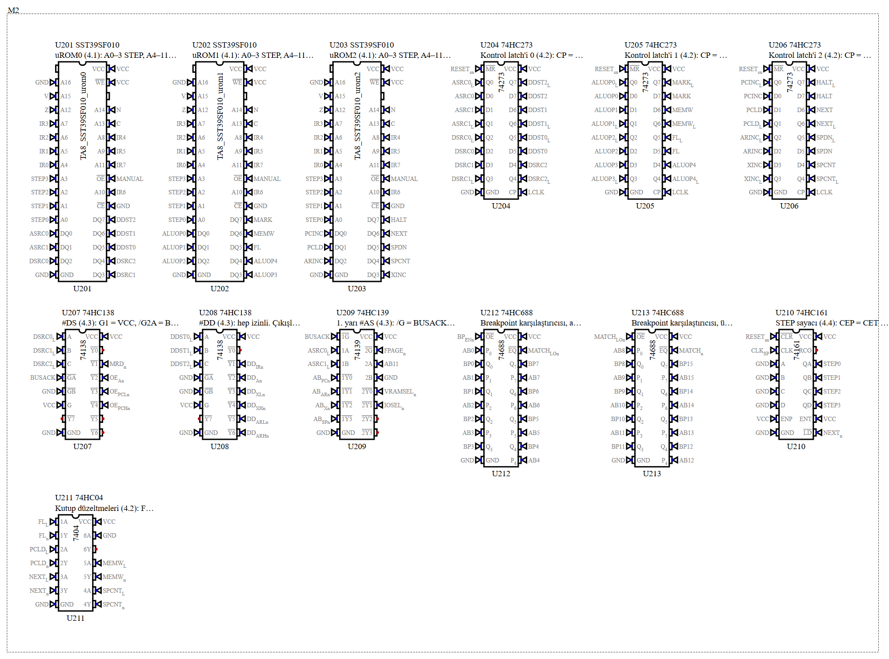
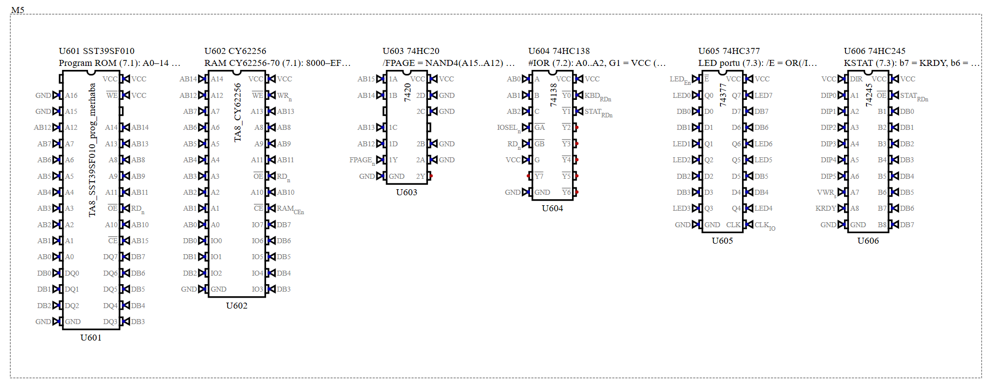
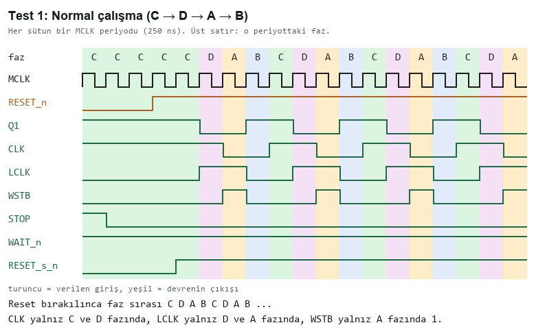
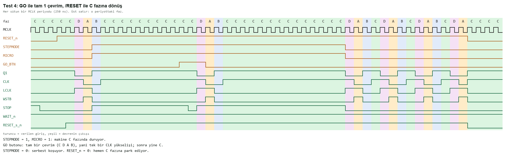
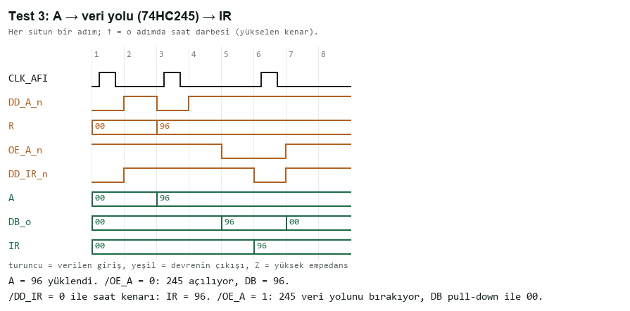
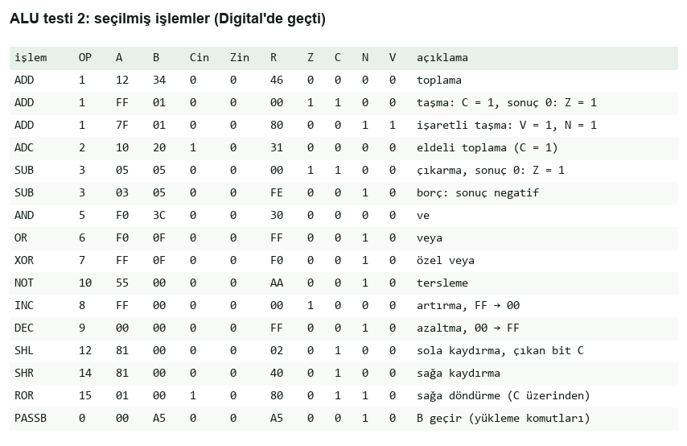
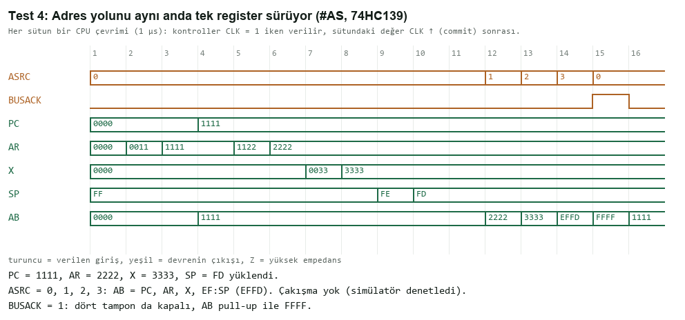
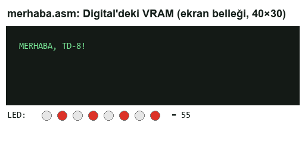
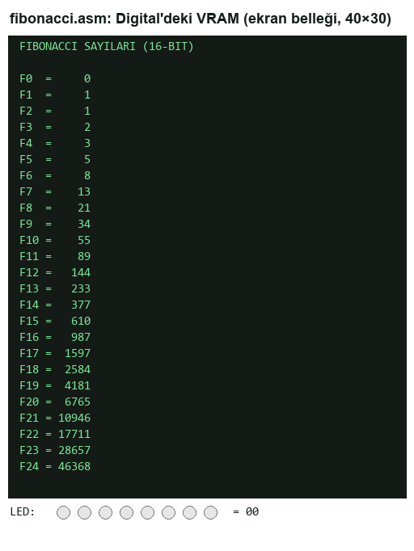

TD-8: 4. hafta raporu
74HC entegrelerle breadboard üzerinde kendi 8-bit bilgisayarımız. Sonunda C ile yazılmış Snake oyunu onda çalışacak.
İlerleme
YazılımDeniz
- Komut seti ve ROM üreticileri bitti
- Assembler bitti
- Emülatörler ve testler bitti
- Çarpma, bölme, yazdırma kütüphanesi bitti
- Devre test vektörü üretici bitti
- C derleyicisi 6. hafta raporunda
- Arduino iz ve yükleme yazılımı Aralık
- Snake oyunu (C) Mart – Nisan
DonanımAbdurrahman · M2 ve M5: Deniz
- M2 kontrol ünitesi (Deniz, Digital'de) bitti
- M5 bellek (Deniz, Digital'de) bitti
- M1 saat modülü (Abdurrahman) bitti
- M4 registerlar (A, IR, F) ve ALU (Abdurrahman) bitti
- M3 adres registerları (Abdurrahman) bitti
- İşlemcinin birleştirilmesi bitti
- M6 VGA Aralık
- M7 PS/2 klavye Aralık
- KiCad şemaları, yerleşim planı Aralık
- Breadboard yapımı ve testleri Ocak – Mayıs
Çubuklar işlerin plandaki sürelerine göre bölündü (SISTEM-PLANI bölüm 13–14). Yüzde yalnızca biten işleri sayar: bir modül, testleri geçince biter. Kontrol ünitesi (M2) ve bellek (M5) planda Deniz'in; saat (M1), adres registerları (M3) ve veri yolu ile ALU (M4) Abdurrahman'ın. Hepsi Digital'de, devre seviyesinde test edildi; birleştirilmiş işlemci 3 programda emülatörle sıfır fark verdi.
Yaptık
- Sistem planı ve TD-8 komut setibütçe 17.503 TL · 53 komut
- Simülasyon yazılımı ve kütüphaneassembler, 2 emülatör, çarpma ve bölme
- Saat, registerlar, ALU ve adres registerları Digital'de test edildiAbdurrahman · 15 modül testi
- Bütün işlemci Digital'de, emülatörle sıfır fark3 program · 33.170 çevrime kadar
- Digital, test vektörleri, Proteus ROM dosyaları3. hafta · 54 test
- Çip seviyesi simülatör25 entegre modeli, gecikmeli
- Digital'e dışa aktarımher entegre Digital'in kendi 74xx çipi
- Kontrol ünitesi ve bellek Digital'de test edildiALU tabloları dahil · planın kabul ölçütleri geçti
- Yeni testler+59 entegre modeli testi ve Digital modül testleri
Yapıyoruz
- C derleyicisiDeniz
- Prototip a: saat modülü breadboard'daAbdurrahman · WAIT zamanlaması osiloskopla · parçalar gelince
- Parça siparişi ve giriş testleritest listesi hazır · parçalar gelince
Yapacağız
- VGA ekran ve klavye simülasyondaAralık
- Breadboard'da kurulumOcak – Haziran 2027
- C ile yazılmış Snake demosuMayıs 2027
Kilometre taşları
- 9 Kas · 18 Kas'ta geçtiSaat modülünün testleri geçiyor
Digital'de 4 test: normal, STOP, WAIT, GO/RESET - 23 Kas · geçtiİşlemci simülasyonda emülatörle sıfır farkla çalışıyor
merhaba, komut_testi, fibonacci - 14 AraSimülasyonda ekrana yazı
- 3 OcaTasarım donduruldu, yapıma hazır
- Nisan 2027Breadboard'da işlemci program çalıştırıyor
- Mayıs 2027Snake demosu çalışıyor
Deniz
Simülasyon yazılımı, komut seti ve C derleyicisi. Bu haftanın konusu planda Deniz'e düşen iki donanım modülü: kontrol ünitesi (M2) ve bellek (M5). İkisi de devre seviyesinde, Digital'de test ediliyor. Notlar: Taha/hafta4.
Özet
| İş | Sonuç |
|---|---|
| Çip seviyesi simülatör | 25 entegre modeli (23 çeşit 74HC, flash, SRAM), gecikmeli |
| Digital'e dışa aktarım | Bağlantı listesi Digital'in .dig dosyasına çevriliyor; her entegre Digital'in kendi 74xx çipi |
| Kontrol ünitesi (M2) | Mikrokod 1.000 vektör, kod çözücüler 512 satır: geçti |
| Bellek (M5) | Adres çözme 1.096 vektör: geçti |
| ALU tabloları | 10.000 rastgele vektör: geçti |
| Giriş testi listesi | Gelen her parça için test ve geçme ölçütü |
| C derleyicisi | Üzerinde çalışılıyor; 6. hafta raporunda anlatılacak |
| Testler | +59 entegre modeli testi ve Digital modül testleri |
İki modül
Kontrol ünitesi (M2): adım sayacı, 3 mikrokod ROM'u, kontrol latch'i ve kod çözücüler. Komutun her adımında hangi kontrol hatlarının açılacağına karar verir. Planda M2'ye ait breakpoint karşılaştırıcıları (2 entegre) hata ayıklama işiyle birlikte sonra eklenecek.
Bellek (M5): program ROM'u, RAM, adres çözme, LED portu ve durum portu (KSTAT: klavye ve DIP anahtarları). Adres çözme, adres yolundaki değere göre hangi çipin seçileceğine karar verir.
Çip seviyesi simülatör
Emülatör işlemcinin ne yapması gerektiğini söylüyor. Çip seviyesi simülatör ise kabloların doğru bağlanıp bağlanmadığını söylüyor: her entegre ayrı bir model, her bacak ayrı bir tel.
- Digital gerçek gecikmeleri modellemiyor. Bu simülatörde her entegrenin gecikmesi var (tipik ve en kötü değerler); böylece 1 MHz'de sinyallerin yetişip yetişmediği görülüyor.
- Modüllerin bağlantısı şema çizilmeden önce deneniyor. Hata şemada değil kodda bulunuyor ve kolay düzeltiliyor.
- Aynı bağlantı listesinden hem Digital dosyası hem Proteus ve breadboard için bağlantı tablosu üretiliyor. Böylece üç yerde aynı devre olduğundan emin oluyoruz.
Neleri yakalıyor: iki entegrenin aynı hatta aynı anda çıkış vermesi (bus çakışması), boşta kalan giriş, kurulum ve tutma süresi ihlali, belleğe hatalı yazma.
Testlerin gerçekten hata yakaladığı denendi: entegre modellerinde yapılan 7 bilinçli bozmanın 7'si yakalandı.
Dosyalar: sim/td8/hw/kernel.py (çekirdek), chips.py (25 entegre modeli; gecikme tablosunun bir kısmı tahmin, dosyada işaretli).
Digital'e dışa aktarım
sim/td8/hw/digital.py bağlantı listesini Digital'in .dig dosyasına çeviriyor. Her entegre Digital'in kendi 74xx kütüphanesindeki bacaklı çip; her bacakta sinyal adı yazıyor.


- Dışa aktarılan devreler Digital'de ve bizim simülatörde aynı sonucu veriyor. 23 çeşit entegrenin hepsi, datasheet kurallarına uyan uyaranla denendi.
- Digital gecikmeleri modellemez: orada yalnız işlev doğrulanır, zamanlama bizim simülatörde.
- Bulgu: Digital, ROM dosyasının göreli yolunu devre dosyasına göre çözmüyor. Bu yüzden ROM içerikleri
.digdosyasının içine gömüldü. - Dosyalar Digital'in arayüzünde açılıyor; testler komut satırından çalıştırılıyor (aşağıda).
Dosyalar: sim/digital/m2_kontrol.dig, m5_bellek.dig ve diğer modüller.
Modül testleri: planın kabul ölçütleri
Vektörleri test vektörü üreticisi veriyor; Digital tabloyu satır satır deniyor (SISTEM-PLANI bölüm 12.3).
| Ne | Modül | Vektör | Sonuç |
|---|---|---|---|
| ALU tabloları (2 flash) | M4 | 10.000 rastgele | geçti |
| Mikrokod (3 ROM + kontrol latch'i) | M2 | 1.000 | geçti |
| Kod çözücüler | M2 | 512 (tam tablo) | geçti |
| Adres çözme | M5 | 1.096 (96 sınır adresi + 1.000 rastgele) | geçti |
> digital-cli.cmd test -circ m2_urom.dig (aynısı dört dosya için)
m2_urom: passed M2 mikrokod, 1.000 vektör m2_cs: passed M2 kod çözücüler, 512 satır m4_alu_tablo: passed M4 ALU tabloları, 10.000 vektör m5_cozme: passed M5 adres çözme, 1.096 vektör
Her dosyada modülün entegreleri ve test tablosu birlikte duruyor: sim/digital_kabul/. Digital'de açıp araç çubuğundaki test düğmesiyle de çalıştırılabilir.
Testlerin hata yakaladığı da denendi: bilerek bozulan devreler Digital'de kalıyor (ör. ALU'da iki adres bacağı yer değiştirince).
ALU'nun tabloları flash içeriği; M4 modülünün kendisi (registerlar ve şema) Abdurrahman'da.
Gelen parçalar için giriş testi listesi
Her parça kullanılmadan önce bir kez denenir; sonuç lab defterine yazılır.
| Parça | Test | Geçme ölçütü |
|---|---|---|
| SST39SF010 (flash) | T48 programlayıcıda sil, build/urom0.bin yaz, doğrula | Doğrulama hatasız. Hız eki (-70 / -90) not edilir: -70'ler mikrokod ve ALU soketlerine |
| CY62256 (SRAM) | T48'in SRAM testi; yoksa Arduino ile 55/AA yaz-oku | Bütün adreslerde hatasız |
| 74HC161, 74HC191 | Breadboard'da 1 Hz saatle say, LED'lerde izle; reset ve yükleme | 0–15 sayıyor, /MR ve /PE çalışıyor; 191 iki yönde sayıyor |
| 74HC245 | Bir yöne veri geçir, /OE ile kapat | /OE = 1 iken çıkış boşta |
| 74HC138, 74HC139 | 3 anahtarla adres ver, 8 LED | Her adreste yalnız bir çıkış 0 |
| 74HC273, 74HC377 | Anahtarlardan veri yükle; 377'de izin girişi | Saat kenarında yüklüyor; /E = 1 iken yüklemiyor |
| 4 MHz ve 25 MHz osilatör | Osiloskopla frekans ve genlik | Frekans doğru, 0–5 V arası temiz kare dalga |
| Çıkış gerilimi (VOH) | Flash ve SRAM çıkışını yük altında ölç (prototip b) | 4 V'un üstünde. Altındaysa bazı çipler 74HCT'ye geçer (DOGRULAMA.md madde 7) |
Testler
- +59 entegre modeli testi (
test_hw_chips.py): her entegrenin doğruluk tablosu ve simülatörün çekirdeği. - Digital modül testleri (
test_hw_digital.py): yukarıdaki kabul ölçütleri ve dışa aktarılan çiplerin bizim simülatörle karşılaştırılması.
Gelecek hafta
- Bütün işlemcinin birleştirilmesi: bütün modüller bir arada, emülatörle çevrim çevrim karşılaştırma.
- C derleyicisi: 6. hafta raporunun konusu.
Abdurrahman
Devre modüllerini Digital'de kuruyor ve test ediyor. Kendi notları: Abdurrahman klasörü (her hafta için ayrı klasör: hafta1 … hafta4).
Yeni not: 18 Kasım. Proteus'taki ilk saat modülü dosyası silindiği için ekibin geri kalanıyla aynı araca, Digital'e geçildi. İlk haftalardaki SAP-1 şemaları (74LS173, B registerı, 74LS283 ALU, 16 baytlık RAM, MAR) TD-8 planına göre yenilendi; her modül planın istediği testlerle Digital'de denendi.
Özet
| Modül | Entegre | Testler | Sonuç |
|---|---|---|---|
| M1 saat / reset / durdurma | 12 | Normal çalışma (C → D → A → B), STOP, WAIT, GO ve /RESET_s | 4/4 geçti |
| M4 A, IR, F registerları | 4 | A'ya ALU sonucundan yükleme, IR'ye veri yolundan yükleme, A → veri yolu → IR, F bayrakları ve asenkron reset | 4/4 geçti |
| M4 ALU (2 flash) | 3 | vectors alu -n 10, seçilmiş 16 işlem, 10.000 rastgele vektör | 3/3 geçti |
| M3 adres registerları | 26 | PC sayma ve AR'dan yükleme, AR ve X'e iki bayt yükleme, SP push/pop, adres yolunu tek register sürüyor | 4/4 geçti |
| Bütün işlemci | 63 | merhaba, komut_testi, fibonacci Digital'de, emülatörle çevrim çevrim | 3/3 sıfır fark |
Entegre sayıları test dosyasındaki çipler: M1'de STOP OR'u (U503), M3'te CLK tamponu, adres yolu seçicisi (74HC139), invertör ve SP'nin NAND'ı da var. Bağlantılar bağlantı tablosuyla birebir aynı (projenin netlist'i sim/td8/hw/cpu.py). Testler Digital'in kendi test aracıyla (CLI test) çalıştırıldı.
Saat modülü (M1): ilk kilometre taşı
İki 74HC74 Johnson sayacı her CPU çevrimini dört faza böler: C → D → A → B. CLK yalnız C ve D'de, LCLK yalnız D ve A'da, yazma darbesi WSTB yalnız A'da yüksek. STOP = 1 iken sayaç C'de durur, WAIT iken D'de bekler; GO butonu tam bir çevrim çalıştırır, reset sayacı C'ye alır. WAIT kapısında 12 Kasım düzeltmesi (74HC138'in G1 ucu CLK'ye) kullanıldı.


Registerlar ve ALU (M4)
- B registerı yok: ALU'nun sağ girişi doğrudan veri yolu.
- A (74HC377) girişini ALU sonucundan (R) alır; veri yoluna 74HC245 ile çıkar. IR (74HC377) veri yolundan yüklenir, 8 bitin hepsi mikrokod ROM'larına gider. F (74HC161) Z, C, N, V bayraklarını tutar.
- ALU iki flash'ta tablo: ALU-L alt 4 biti, ALU-H üst 4 biti ve bayrakları hesaplar; C = Clo OR Chi (74HC32). 25 işlem.


Adres registerları (M3)
TD-8'de ayrı bir MAR yok: adres yolunu dört register sürüyor. PC, AR ve X 16 bit (4× 74HC161), SP 8 bit yukarı/aşağı sayıcı (2× 74HC191) ve EF sayfasında. 74HC139 (#AS) aynı anda yalnız birinin tamponunu açar.
- PC 0001, 0002, 0003 sayıyor; AR'dan 12FE yükleniyor ve 12FF → 1300 geçişinde dört 161 zincirleme taşıyor.
- AR ve X veri yolundan iki bayt halinde yükleniyor (34 sonra 12 → 1234).
- SP reset'te FF; push ile F0 → EF (üst 191 de sayıyor), pop ile geri FF ve 00.

Bütün işlemci: emülatörle sıfır fark
M1–M5 ve yardımcı kapılar tek devrede (63 entegre; VGA ve klavye henüz taklit). Her programda Digital'de her commit kenarında adres yolu, veri yolu ve 24 bitlik kontrol kelimesi kaydedildi ve mikroadım emülatörüyle karşılaştırıldı; program bitince LED, RAM ve ekran belleği de karşılaştırıldı.
| Program | Ne yapıyor | Çevrim | Sonuç |
|---|---|---|---|
| merhaba | Ekrana yazı, LED = 55 | 573 | sıfır fark |
| komut_testi | 88 opcode'un hepsi; kendini denetler, hatasızsa LED = A5 | 796 | sıfır fark, LED = A5 |
| fibonacci | 16-bit Fibonacci, çarpma/bölme kütüphanesiyle ekrana | 33.170 | sıfır fark |

merhaba.asm: Digital'deki ekran belleği ve LED'ler.
fibonacci.asm: F0–F24, 33.170 çevrim.Digital gecikmeleri modellemez: burada işlev doğrulandı. Zamanlama (ör. WAIT payı ~3 ns) çip seviyesi simülatörde ve prototip a'da.
Önceki haftalar
1. hafta: saat modülü Proteus'ta kurulmuştu; dosya silindi, 18 Kasım'da Digital'de yeniden yapıldı ve testleri eklendi. 2. hafta: A, B ve IR şemaları SAP-1 yapısındaydı (74LS173); TD-8'e göre A, IR, F olarak yenilendi. 3. hafta: ALU, RAM ve MAR notu SAP-1 yapısındaydı; TD-8'deki karşılıkları (flash'ta ALU, M3 adres registerları) kuruldu. RAM M5'in parçası (Deniz).
Gelecek hafta
- VGA zamanlaması (M6): saatler, sayaçlar ve zamanlama ROM'u.
- Prototip a: saat modülü breadboard'da, WAIT zamanlaması osiloskopla (parçalar gelince).